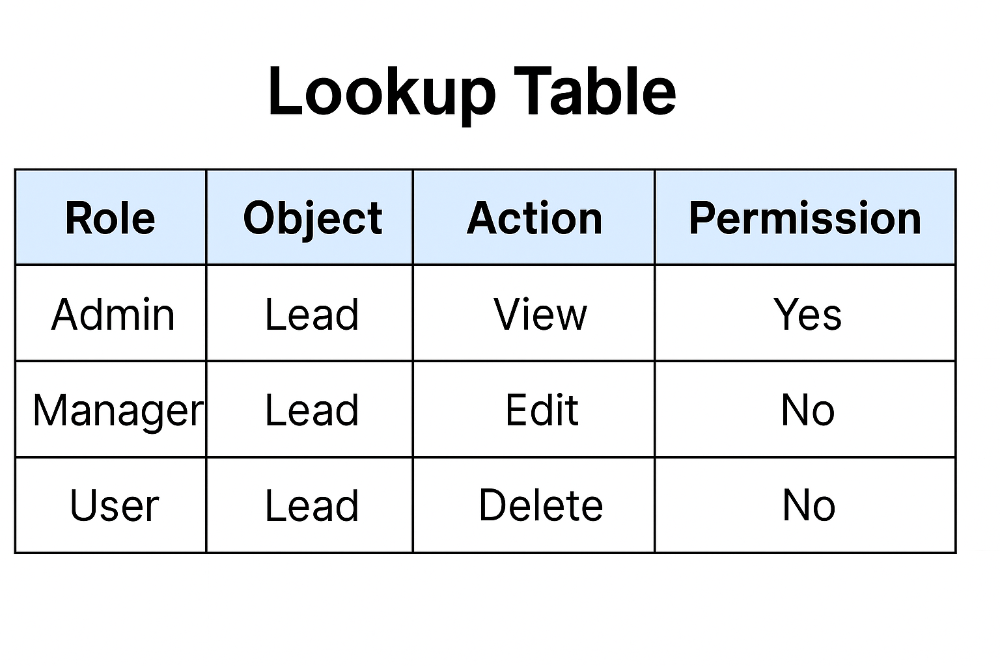

<!DOCTYPE html>
<html lang="en">
<head>
  <meta charset="UTF-8" />
  <meta name="viewport" content="width=device-width, initial-scale=1.0"/>
  <title>Salesforce | CRM</title>
  <link rel="stylesheet" href="https://cdnjs.cloudflare.com/ajax/libs/font-awesome/6.5.0/css/all.min.css">
<link rel="stylesheet" href="style1.css" />
</head>
<body>
  <div class="layout">
    <aside class="sidebar">
      <h2><i class="fas fa-cloud"></i> Salesforce Use Cases</h2>
      <ul>
        <li><a href="#intro">Introduction</a></li>
        <li><a href="#performance">Performance </a></li>
        <li><a href="#code">Code</a></li>
        <li><a href="#complexity">Time and Space Complexity</a></li>
        <li><a href="#inf">Inference</a></li>
        <li><a href="#ref">References</a></li>
        <li><a href="../index.html"><- Back to Home</a></li>

    </ul>
    </aside>

    <main class="main">
      <h1 class="header">Dynamic User Access and Permission Management </h1>
<!--       <p class="subtitle">Utilizes efficient data structures to synchronize customer interactions and transactional records across systems in near real-time. Hash Maps and Queues provide fast access and order-preserving mechanisms to manage high-throughput CRM operations.</p> -->

      <div class="card" id="intro">
        <h3>Business Case</h3>
<p>In large enterprise systems like Salesforce, dynamic user access and permission management is critical. Users (admins, agents, managers, clients) require different levels of access to objects, fields, and features. Static permission models can be limiting or slow to adapt to changes.</p>      </div>
      <div class="card" id="performance">
        <h3>Algorithm, Design Techniques, Performance Analysis:</h3>
<p>A lookup table acts as a fast-access mapping structure (like a 2D array, hash table, or nested map), storing permissions associated with roles, actions, and objects. This allows constant time access checks, central policy updates, and easier auditing</p>      
        
        <p><strong>Challenges:</strong> Keeping the lookup table synced with real-time policy changes,Managing multi-dimensional access (role + object + action).</p>
        <p><strong>Market Benefits:</strong> Reduces unauthorized access risks by centralizing control, Permissions can be updated without modifying codebase .</p>
        <h4>Algorithm, Design Techniques, Performance Analysis:</h4>
        <li><strong>Data Structure used:</strong> unordered_map<string, unordered_map<string, unordered_map<string, bool>>>	Triple-level lookup: Role → Object → Action → Access
Hash Table	Provides O(1) average time complexity for access control check</li>
            <li><strong>Design Techniques: </strong> Modular Design: Encapsulated permission management inside a class.
Policy Lookup Abstraction: Lookup abstracted so implementation changes don't affect users.
Hash Maps: For quick, dynamic permission control.
Role-Based Access Control (RBAC) + fine-grained permissions.</li>
</div>

      <div class="card" id ="code"> 
        <h3>Code</h3>
        <div class="code-block">
<pre>
#include <iostream>
#include <unordered_map>
#include <string>

using namespace std;

// Define Role -> Object -> Action -> Permission
class PermissionManager {
    unordered_map<string, unordered_map<string, unordered_map<string, bool>>> accessTable;

public:
    void grantPermission(const string& role, const string& object, const string& action) {
        accessTable[role][object][action] = true;
    }

    void revokePermission(const string& role, const string& object, const string& action) {
        accessTable[role][object][action] = false;
    }

    bool hasPermission(const string& role, const string& object, const string& action) {
        return accessTable[role][object][action];
    }
};

int main() {
    PermissionManager pm;

    // Grant permissions
    pm.grantPermission("admin", "lead", "delete");
    pm.grantPermission("sales", "lead", "view");

    // Check permissions
    cout << "Admin can delete lead: " << pm.hasPermission("admin", "lead", "delete") << endl;
    cout << "Sales can delete lead: " << pm.hasPermission("sales", "lead", "delete") << endl;

    return 0;
}
</pre>
        </div>
      </div>

      <div class="card" id ="complexity">
        <h3>⏱️ Time And Space Complexity</h3>
          <table>
    <thead>
      <tr>
        <th>Operation</th>
        <th>Time Complexity</th>
        <th>Space Complexity</th>
      </tr>
    </thead>
    <tbody>
      <tr>
        <td><code>grantPermission</code></td>
        <td>O(1)</td>
        <td>O(R × O × A) where R = roles, O = objects, A = actions</td>
      </tr>
      <tr>
        <td><code>revokePermission</code></td>
        <td>O(1)</td>
        <td>O(1)</td>
      </tr>
      <tr>
        <td><code>hasPermission</code></td>
        <td>O(1)</td>
        <td>O(1)</td>
      </tr>
    </tbody>
  </table>
      </div>
      <div class="card references" id="inf">
        <h3>Inference</h3>
        <p>Lookup tables provide constant-time access, essential for checking permissions and roles instantly. Supports real-time dynamic access control across Salesforce modules.</p>
      </div>
      
      <div class="card references" id="ref">
        <h3>📚 References</h3>
        <ul>
          <li>https://en.wikipedia.org/wiki/Lookup_table</li>
         </ul>
      </div>

      <div class="nav-footer">
        <a href="8.html">Next: Email Campaign Management →</a>
      </div>
    </main>
  </div>
</body>
</html>
